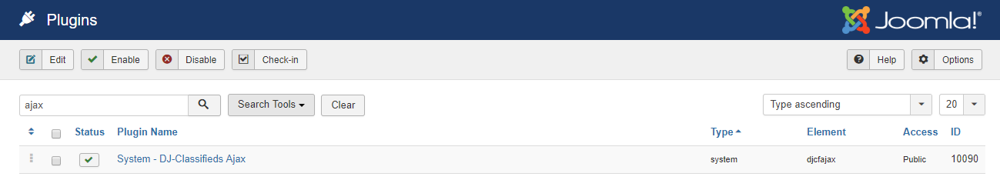
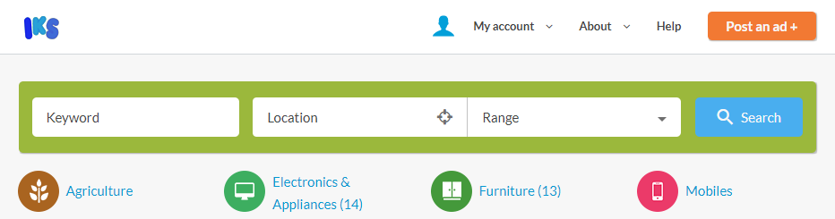
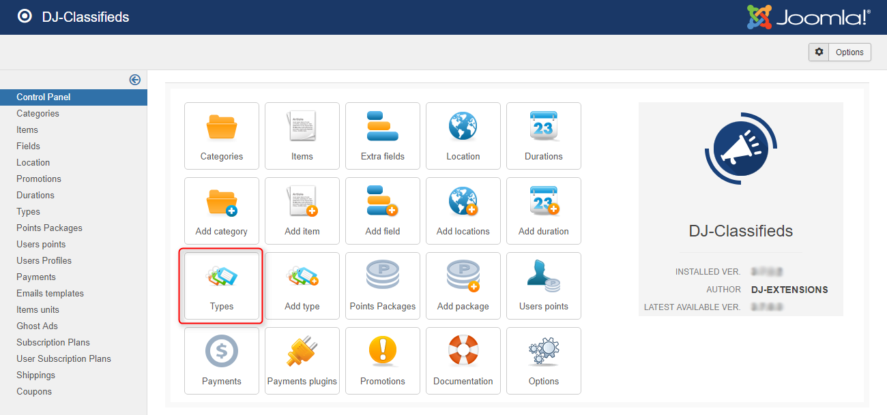
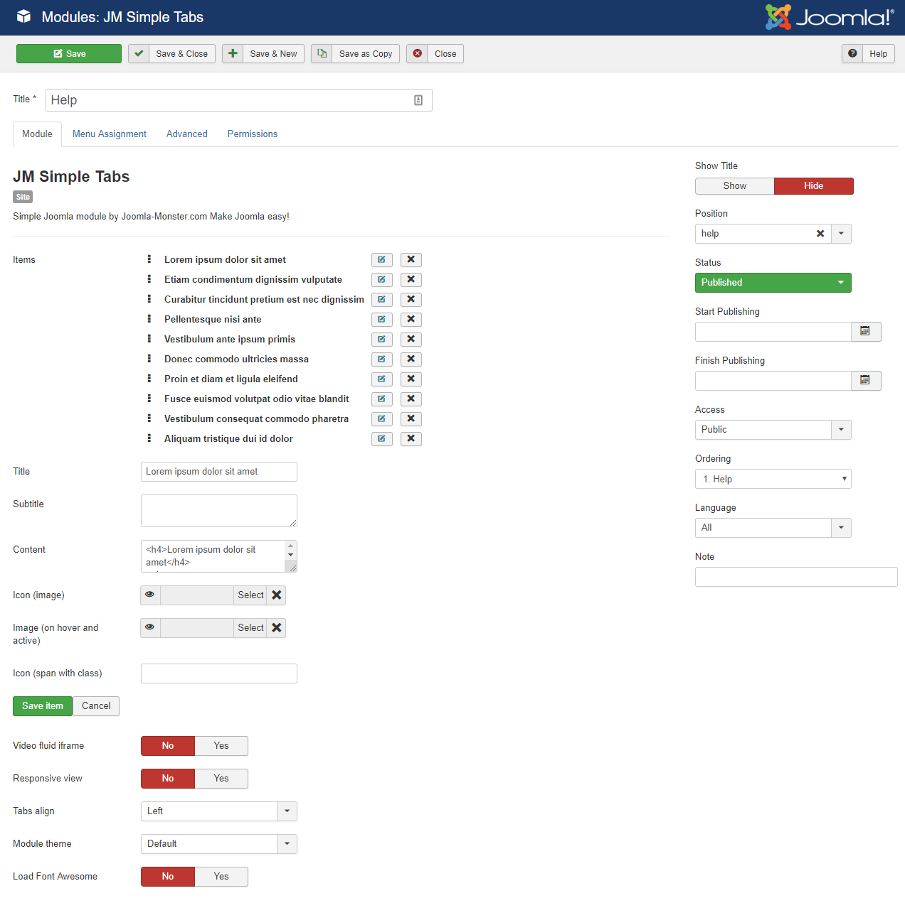

Installing the quickstart (demo copy)
From your download area at Joomla-Monster.com you need to download the quickstart package. The package is named as "quickstart.zip" and it will be needed in this step.
Instead of installing the template and all extensions separately, you can simply install the quickstart package which is the exact copy of the demo site.
This way you will save a lot of time on configuring all settings from a scratch.
In the below article, you will find :
- a video tutorial on how to install the quickstart package step by step
- solutions to common issues during quickstart installation
Installing the template and extensions in Joomla
From your download area at Joomla-Monster.com, you need to download the zip packages of the template, modules and extensions:
- template
- DJ-Classifieds
- DJ-Classifieds theme
- AJAX app for DJ-Classifieds
- DJ-MegaMenu
- DJ-MediaTools
- DJ-Messages
- JM Offcanvas Button
- JM Simple Tabs
- JM Social Icons
From download area at DJ-Extensions.com (it is our sister company), you need to download the zip packages of some extensions:
- DJ-Suggester Light
- DJ-jQueryMonster
From akeebabackup.com download Social login solution:
- Akeeba Social Login
From joomlashack.com download sitemap extension:
- OSMap
All the above packages are required in this step because you need to install them one by one.
Log in to the backend of your site as follows:
www.yoursite.com/administrator
From the top bar menu, click on "Extensions → Manage → Install".
On this page you can install a template, component, module, plugin or language package.
1) On the "Upload Package File" tab – browse your PC and select the template package, click on "Upload & Install".
2) You should get a message saying that installing the package was successful.
Activating the template and plugins
1. Activate the template
From the top bar menu, click on "Extensions → Templates → Styles".
On this page you will see a list of installed templates. Tick on "your-template-name" and click on the "Default" button to set this template as the default one.
2. Activate the EF4 Framework plugin
From the top bar menu, click on "Extensions → Plugins". On this page you will see a list of available plugins in your Joomla.
Search for "EF4 Joomla-Monster Framework" plugin and make sure it is published.
4. Activate the DJ-Classifieds plugins
From the top bar menu, click on "Extensions → Plugins". On this page you will see a list of available plugins in your Joomla.
Search for DJ-Classifieds plugins and make sure they are published.
The above image is for preview purpose only. You may see a different set of DJ-Classifieds plugins on your site.
DJ-Classifieds Theme
Next, you will need to set the DJ-Classifieds theme as the default one in the DJ-Classifieds global configuration.
5. Activate the AJAX app for DJ-Classifieds
From the top bar menu, click on "Extensions → Plugins". On this page you will see a list of available plugins in your Joomla.
Search for System - DJ-Classifieds Ajax plugin and make sure it is published.

6. Activate the DJ-MediaTools plugins
From the top bar menu, click on "Extensions → Plugins". On this page you will see a list of available plugins in your Joomla.
Search for DJ-MediaTools plugins and make sure they are published.
The above image is for preview purpose only. You may see a different set of DJ-MediaTools plugins on your site.
7. Activate the DJ-Messages plugins
From the top bar menu, click on "Extensions → Plugins". On this page you will see a list of available plugins in your Joomla.
Search for DJ-Messages plugins and make sure they are published.
The above image is for preview purpose only. You may see a different set of DJ-Messages plugins on your site.
8. Activate the DJ-Suggester Light plugin
From the top bar menu, click on "Extensions → Plugins". On this page you will see a list of available plugins in your Joomla.
Search for DJ-Suggester plugin and make sure it is published.
After that, you should select where to display suggestions in the plugin configuration.
9. Activate the DJ-jQueryMonster plugin
From the top bar menu, click on "Extensions → Plugins". On this page you will see a list of available plugins in your Joomla.
Search for DJ-jQueryMonster plugin and make sure it is published.
After that, you need to enable the jQuery and jQuery UI options in the plugin configuration.
Preparing sample data
1. Transfering images for content
From your download area at Joomla-Monster.com you need to download the quickstart package.
First of all, you need to unpack this file.
Next step is to transfer all files from this location:
quickstart/images/
to this location on your server:
root/images/
quickstart | |-- administrator |-- bin |-- cache |-- cli |-- components |-- images # transfer all files from this location |-- includes |-- languages |-- layouts |-- libraries |-- logs |-- media |-- modules |-- plugins |-- templates |-- tmp
We recommend to use Filezilla to transfer files. It is a popular FTP client. Read more details on how to use Filezilla.
If you have such an option, you can also use a file manager in the control panel of your hosting plan.
2. Importing the template settings
The template is built on the EF4 Joomla-Monster framework.
It is an advanced framework for Joomla templates which allows to configure many useful settings using the template parameters.
From the top bar menu, click on "Extensions → Templates → Styles".
On this page you will see a list of installed templates. Click on "Your-template-name - Default" to edit this template parameters.
Click on the "Settings Storage" tab. In this section, you can import the default settings.
Click on the "Stored Settings" dropdown. In the dropdown, you will find the default settings for each version of your template.
Select one of the settings and click on the "Load" button.
The detailed documentation about template settings in the EF4 framework you will find here:
3. Changing the logo

After importing the template settings, you will probably see the logo file from our sample data. You can change that logo to your own in the template parameters.
Configuring a menu
2. Hiding component part on home page
On the home page of demo template, we published modules only. Component part should be disabled.
From the top bar menu, click on "Extensions → Template Manager → Your-template-name - Default → Basic Settings → Other settings ".
Select menu item "Home" in filed Disable component to disable component display on this menu item.
3. Assigning a layout to the home page
On the live demo, we use a different layout for the home page.
Go to "Layout Builder" tab where you need to select the "Home" layout:
Now you need to assign this style to the "Home" menu item. Go to "Menu Assignement" tab and assign this template style to the "Home" menu item:

Now, click on "Save & Close" to save settings.
Configuring the DJ-MegaMenu extension
DJ-MegaMenu is an advanced menu system that gives you wide range of possibilities to set up the menu as you need. It allows to set the amount of columns per each menu item, as well as put the modules inside.
1. Module Parameters
After the DJ-MegaMenu installation, the next step is to set up the module parameters.
From the top bar menu, click on "Extensions → Modules". On this page you will see a list of available modules in your Joomla. Search for the DJ-MegaMenu module and click on it.
Let's take a closer look at the most important settings:

Worth to mention:
- Menu name – choose a menu you want to display within the DJ-MegaMenu module
- Position – make sure the module is displayed on the proper module position.
Read more about module positions. - Status – you need to set "Published" to publish this module
- Theme – choose "Override from template" as the default one
- Columns width in pixels – enter the columns width
- Mobile Menu – choose a menu type for mobile devices
- Mobile Menu Theme – choose a theme for mobile menu
- Mobile Menu trigger width – choose when the mobile menu button should appear for small screens
To display a menu button like for the "Post an ad +", you need to add a class to the menu item:
Configuring the DJ-Classifieds extension
DJ-Classifieds extension needs no introduction to anyone. A complete solution if you want to display classified ads with Joomla.
Let's start with configuring the global options of component.
1. Global configuration
From the top bar menu, click on "Components → DJ-Classifieds". On this page you will see the control panel of DJ-Classifieds component. Click on "Options".
For detailed documentation regarding the DJ-Classifieds global options please visit this page:
Read about DJ-Classifieds component configuration
This is how the "Global" tab looks on the live demo:
Worth to mention:
- Google Maps Server Key & Browser Key - you will find more details about how to generate them: How to use Google Maps API keys
This is how the "Views" tab looks on the live demo:
Worth to mention:
- Theme - choose the theme as the default one. The theme name should be the same as the template name. It is important to get the same design as on live demo.
- Include default CSS - make sure this option is set to "No"
- Image dimensions - pay attention to the image dimensions on the images tab
This is how the "Images" tab looks on the live demo:
On the "Security" and "SEO Settings" tabs we used the default settings.
2. Component settings
From the top bar menu, click on "Components → DJ-Classifieds". On this page you will see the control panel of DJ-Classifieds component.
Before you start adding categories, you need to configure some settings that may be useful for you and your
site visitors, such as extra fields, locations, promotions etc.
Extra fields
In the DJ-Classifieds control panel click on "Extra Fields".
The DJ-Classifieds component allows to assign extra fields to the advert details from the certain category.
Extra fields you can display on the blog, table and single ad view, as well as in the search module.
To create a new extra field, click on "New".
Read how to create a new custom field
Location
In the DJ-Classifieds control panel click on "Location".
In the location settings, you can add predefined locations that will appear for example when a user will be adding a new ad or in the search module.
When a user is adding a new add, there is also possibility to display a map which allows to target a user and set the geographic location.
This map can be enabled in the global configuration.
To create a new location, click on "New".
Read how to create a new location
Promotions
In the DJ-Classifieds control panel click on "Promotions".
You can choose from 5 promotion types and decide which promotions should be published for users as well as you can set a price for each promotion type.
On the live demo, we used the default settings for promotions.
Durations
In the DJ-Classifieds control panel click on "Durations".
In the Durations settings, you can manage durations of displaying ads on your site. You can create a new duration and set a price for each duration on the list.
A user may choose a duration while adding a new ad on your site. On the live demo,
we used the default settings for durations.
Types
In the DJ-Classifieds control panel click on "Types".

In the Types settings, you can define an unlimited types of ads, for example: for sale, rent, free, exchange.
The types can be marked in different colors which you can customize as you wish.
Points System
In the DJ-Classifieds control panel, click on "Points Packages" or "User Points".
Points system is a feature that allows users to buy points and use them to pay for posting ads on your site.
Categories
Now you can pass to create categories of ads. In the DJ-Classifieds control panel click on "Categories".
To create a new category, click on "New".
Read how to create a new category
Items
If needed, you can add an advert from the back-end. In the DJ-Classifieds control panel click on "Items".
To create a new ad, click on "New".
3. Displaying a component on a website
The DJ-Classifieds includes many component views. You can see them all on live demo:
- Add item
- Category blog layout
- Category table layout
- Category tree
- Favourites ads
- Offers submitted
- Points packages
- Profile editing
- Regions tree
- Sales history
- Single ad view
- Subsciptions Plans
- User items
- User Orders history
- User Points
4. Module settings
The DJ-Classifieds extension includes several modules that you can display on your website.
A list of DJ-Classifieds modules used on the live demo:
- DJ-Classifieds Category Tree
- DJ-Classifieds Items
- DJ-Classifieds Maps
- DJ-Classifieds Menu
- DJ-Classifieds Regions
- DJ-Classifieds Search
DJ-Classifieds Category Tree
This module allows to display categories as tree.
From the top bar menu, click on "Extensions → Modules", then click on "New" and click on "DJ-Classifieds Category Tree".
Worth to mention:
- Title - enter a module title. A module must have a title, otherwise you won't be able to save the module.
- Position - select a module position. This way you will put a module on the desired place.
Read more details regarding the module positions. - Module class suffix - enter a module class suffix to change the module design.
Read more about module suffixes in this template. - Category tree sort type - choose how you want to sort the category items in the module
- Category tree columns - choose a number of columns to display category items
- Type of first level - choose a type of the first level category item
- Parent category - choose a parent category for this module
When you complete the form, click on "Save & Close" to save the module.
Read more about DJ-Classifieds Category Tree module parameters
On the live demo, we have displayed one "DJ-Classifieds Category Tree" module:
DJ-Classifieds Category Tree on the "header-1" module position
Let's see the module parameters:
DJ-Classifieds Items
This module allows to display ads from selected categories.
From the top bar menu, click on "Extensions → Modules", then click on "New" and click on "DJ-Classifieds Category Items".
Worth to mention:
- Title - enter a module title. A module must have a title, otherwise you won't be able to save the module.
- Position - select a module position. This way you will put a module on the desired place.
Read more details regarding the module positions. - Number of items and Number of columns - enter how many ads you want to display. If you would like to display ads in columns, then select a number of columns.
- Categories and Regions - specify from which categories and regions you wish to display ads. Leave empty to display ads from all categories and regions.
When you complete the form, click on "Save & Close" to save the module.
Read more about DJ-Classifieds Items module parameters
On the live demo, we have displayed several "DJ-Classifieds Items" modules:
Recent Ads on the "top1-1" module position
Let's see the module parameters:
Features items on the "djcf-items-top" module position
Let's see the module parameters:
My other offers on the "djcf-item-bottom" module position
Let's see the module parameters:
DJ-Classifieds Maps
This module allows to display the Google Map with locations of ads.
From the top bar menu, click on "Extensions → Modules", then click on "New" and click on "DJ-Classifieds Maps".
Worth to mention:
- Title - enter a module title. A module must have a title, otherwise you won't be able to save the module.
- Position - select a module position. This way you will put a module on the desired place.
Read more details regarding the module positions. - Map width and Map height - enter the Google Map demonsions
- Default address - enter the default address. The default address will be selected on the Google Map.
When you complete the form, click on "Save & Close" to save the module.
Read more about DJ-Classifieds Maps module parameters
On the live demo, we have displayed one "DJ-Classifieds Maps" module:
Classifieds Map on the "classifieds-map" module position
Let's see the module parameters:
DJ-Classifieds Menu
This module displays a menu with all ads categories.
From the top bar menu, click on "Extensions → Modules", then click on "New" and click on "DJ-Classifieds Menu".
Worth to mention:
- Title - enter a module title. A module must have a title, otherwise you won't be able to save the module.
- Position - select a module position. This way you will put a module on the desired place.
Read more details regarding the module positions. - Link to new ad view - choose if you want to display a link to "Add Item" view. On that view, a user can add a new ad.
When you finnish filling the form, click on "Save & Close" to save the module.
Read more about DJ-Classifieds Menu module parameters
On the live demo, we have displayed one "DJ-Classifieds Menu" module:
Main categories on the "bottom4-1" module position
Let's see the module parameters:
DJ-Classifieds Regions
This module displays a menu with all ads locations.
From the top bar menu, click on "Extensions → Modules", then click on "New" and click on "DJ-Classifieds Regions".
Worth to mention:
- Title - enter a module title. A module must have a title, otherwise you won't be able to save the module.
- Position - select a module position. This way you will put a module on the desired place.
Read more details regarding the module positions. - Module class suffix - enter a module class suffix to change the module design.
Read more about module suffixes in this template.
When you finnish filling the form, click on "Save & Close" to save the module.
Read more about DJ-Classifieds Regions module parameters
On the live demo, we have displayed one "DJ-Classifieds Regions" module:
Main categories on the "bottom4-1" module position
Let's see the module parameters:
DJ-Classifieds Search
This module allows you to search ads by attributes.
From the top bar menu, click on "Extensions → Modules", then click on "New" and click on "DJ-Classifieds Search".
Worth to mention:
- Title - enter a module title. A module must have a title, otherwise you won't be able to save the module.
- Position - select a module position. This way you will put a module on the desired place.
Read more details regarding the module positions. - Layout - choose if you want to display a search module vartically or horizontally
- Result view - choose if you want to display a search results in blog or table view
When you finnish filling the form, click on "Save & Close" to save the module.
On the live demo, we have displayed several "DJ-Classifieds Search" modules:
Home search on the "header-1" module position
Let's see the module parameters:
Category search on the "header-1" module positions
Let's see the module parameters:
DJ-Classifieds Stats
This module allows you to display stats about classified ads on your site.
From the top bar menu, click on "Extensions → Modules", then click on "New" and click on "DJ-Classifieds Stats".
Worth to mention:
- Title - enter a module title. A module must have a title, otherwise you won't be able to save the module.
- Position - select a module position. This way you will put a module on the desired place.
Read more details regarding the module positions. - Module class suffix - enter a module class suffix to change the module design.
Read more about module suffixes in this template.
When you finnish filling the form, click on "Save & Close" to save the module.
5. Plugins settings
The DJ-Classifieds extension includes several plugins that you can use on your website.
From the top bar menu, click on "Extensions → Plugins". On this page you will see a list of all plugins.
Payment Plugins
This is a list of available payment plugins in the DJ-Classifieds extension.
- DJ-Classifieds 2Checkout payment
- DJ-Classifieds Stripe payment
- DJ-Classifieds Skrill payment
- DJ-Classifieds Mercado Pago payment
- DJ-Classifieds Ideal payment
- DJ-Classifieds Sofort payment
- DJ-Classifieds DotPay SMS payment
- DJ-Classifieds Przelewy24 payment
- DJ-Classifieds Authorize.net payment
- DJ-Classifieds PayU payment
- DJ-Classifieds PayU bix payment
- DJ-Classifieds PayU South Africa payment
- DJ-Classifieds ROBOKASA payment
- DJ-Classifieds Paypal payment
- DJ-Classifieds Bank Transfer payment
Read more about payment plugins
Other plugins
Beside the payment plugins, there are also three additional plugins.
- DJ-Classifieds Pagebreak - this plugin allows to display tabs or accordion in an ad description
- DJ-Classifieds Quickicon - this plugin displays the DJ-Classifieds icon in the control panel of Joomla
- Search DJ-Classifieds - this plugin allows to search within ads content using the Joomla search component
Premium apps
- Subscription Plans App
- Ajax
- Search Alerts
- Multi Categories App
- Attachments App
- Ghost Ads
- Internal Messaging
- Coupons
- Invoices
- Bad Words
- AltaUserPoints
Configuring the AJAX app for DJ-Classifieds
1. Plugin Settings
The AJAX app for DJ-Classifieds includes one plugin.
The plugin enables dynamic Ajax calls for blog/table pagination, sorting, categories and search filtering.
Dynamic Ajax calls mean that you can navigate the mentioned sections without site reloading.
System - DJ-Classifieds Ajax plugin
Let's take a look at the plugin settings we use on live demo.
From the top bar menu, click on "Extensions → Plugin Manager". On this page you will see a list of all plugins.
Click on the "System - DJ-Classifieds Ajax" plugin.
2. Documentation
Configuring the DJ-MediaTools Extension
DJ-MediaTools extension allows to create slideshows and galleries, insert them into articles, modules or create separate component views.
Let's start with configuring the global options of component.
1. Global configuration
From the top bar menu, click on "Components → DJ-MediaTools". On this page you will see the control panel of DJ-MediaTools component. Click on "Options".
For detailed documentation regarding the DJ-MediaTools global options please visit this page:
Read about DJ-MediaTools component configuration
This is how the "Component views" tab looks on the live demo:
This is how the "Basic album options" tab looks on the live demo:

This is how the "Layout element options" tab looks on the live demo:
This is how the "Customize layout" tab looks on the live demo:

Worth to mention:
- Previous button - this is a path to the "Previous" button in the custom navigation.
The path is:images/modules/navi/prev.png - Next button - this is a path to the "Next" button in the custom navigation.
The path is:images/modules/navi/next.png - Play button - this is a path to the "Play" button in the custom navigation.
The path is:images/modules/navi/play.png - Pause button - this is a path to the "Pause" button in the custom navigation.
The path is:images/modules/navi/pause.png
On the "Upload settings" and "Permissions" tabs we used the default settings.
2. Component Settings
From the top bar menu, click on "Components → DJ-MediaTools". On this page you will see the control panel of DJ-MediaTools component.
The first step is to create an album for your slides.
Albums
In the DJ-MediaTools control panel click on "Albums".
To create a new album, click on "New".
Read more how to create a new album
Once, you have created an album with custom items as album source, you can pass on to create your first custom item.
Custom items
In the DJ-MediaTools control panel click on "Custom items".
To create a new custom item, click on "New".
3. Displaying Component on Website
The DJ-MediaTools includes two component views. You can see them all on live demo:
- Album Grid
- Gallery Grid
- Modern Slider
- Slider
- Slideshow
- Slideshow with thumbnails
- Tabber
- Skitter Slideshow
- Nivo Slider
- Kwicks Panels
4. Module settings
The DJ-MediaTools extension includes one module.
DJ-MediaTools Album
This module allows to display an album in one of several layouts.
From the top bar menu, click on "Extensions → Modules", then click on "New" and click on "DJ-MediaTools Album".
Worth to mention:
- Title - enter a module title. A module must have a title, otherwise you won't be able to save the module.
- Position - select a module position. This way you will put a module on the desired place.
Read more details regarding the module positions. - Album - choose an album which you want to display within the module
- Album layout - choose the album layout which you want to display within the module
The hierarchy of inheriting from lowest to highest priority: Global configuration » Album settings » Module settings
When you complete the form, click on "Save & Close" to save the module.
5. Plugins settings
The DJ-MediaTools extension includes several plugins that you can use on your website.
From the top bar menu, click on "Extensions → Plugins". On this page you will see a list of all plugins.
Album Source Plugins
This is a list of available album source plugins in the DJ-MediaTools extension.
- DJ-MediaTools Source - Joomla Content
- DJ-MediaTools Source - DJ-Catalog2
- DJ-MediaTools Source - DJ-Classifieds
- DJ-MediaTools Source - Folder
- DJ-MediaTools Source - K2
- DJ-MediaTools Source - VirtueMart
Other Plugins
Beside the album source plugins, there are also two additional plugins.
- DJ-MediaTools content plugin - this plugin allows to display an album inside article.
Read more about DJ-MediaTools content plugin. - DJ-MediaTools editor button - this plugin displays a button in Joomla editor.
Read more about DJ-MediaTools editor button.
Configuring the DJ-Messages Extension
DJ-Messages is easy to setup Joomla PMS (Private Messaging System) that lets website users communicate with each other by using a simple inbox/outbox solution. It is also integrated with DJ-Classifieds out of the box.
1. Component Settings
From the top bar menu, click on "Components → DJ-Messages". On this page you will see the control panel of DJ-Messages component.
For detailed documentation regarding the DJ-Messages options please visit this page:
2. Displaying messages on your website
You can display the link to the DJ-Messages Inbox by adding it to any menu you like.
Just create a new menu item in your Joomla menu and choose "DJ-Messages → Messages" as the type.
For detailed documentation regarding the DJ-Messages options please visit this page:
3. Plugins
The DJ-Messages extension includes several plugins that you can use on your website.
From the top bar menu, click on "Extensions → Plugins". On this page you will see a list of all plugins.
This is a list of available plugins in the DJ-Messages extension.
- DJ-Classifieds - DJ-Messages integration
- DJ-Messages - DJ-Classifieds
4. Modules
The DJ-Messages includes several modules which allow you to display DJ-Messages in a component.
Configuring the OSMap extension
Documentation
Configuring modules
1. JM Simple Tabs
This module allows to display content in tabs.
From the top bar menu, click on "Extensions → Modules", then click on "New" and click on "JM Simple Tabs".
On the live demo, we have displayed one JM Simple Tabs module:
Help on the "help" module position
Let's see the module parameters:

3. Other modules used on the demo site
Custom Banner on the "top1-1" or "djcf-item-column" or "djcf-item-description" module positions
This is a custom HTML module.
Read how to display banners in Joomla
Description Homepage on the "bottom3-1" module position
This is a custom HTML module with suffixes " borderbottom margin-ms".
Footer modules
Logo Footer on the "footer-mod-1" module position
This is a custom HTML module.
Company on the "footer-mod-2" module position
This is a Joomla menu module.
Blog on the "footer-mod-3" module position
This is a Joomla menu module.
JM Social Icons on the "footer-mod-4" module position
Screenshots and description for this module you will find in the JM Social Icons module settings.
Copyrights on the "copyrights" module position
This is a custom HTML module.
Joomla-Monster footer
This is Joomla-Monster.com footer link. Read more on how to remove the footer link.
Module positions in the template
The template is using fully responsive layout that adjusts to various screens: desktops, tablets or mobiles.
EF4 Framework includes Layout Builder tool which allows you to customize template layout for different screen dimensions.
Module settings
There are several available module designs that you can control by entering the correct suffix name as a module parameter.
Typography
You will find extended typography here:
In the typography article you will find some examples of custom code used in the template.
Editing with the template files
1. The Template Files Structure
Let's take a closer look to the template files structure.
your-template-name | |-- assets # stored settings for the template parameters, layouts and assignements |-- cache # compressed CSS and JS files if you have enabled CSS/JS compression in the Advanced Features tab |-- css # compiled CSS files |-- fonts # uploaded fonts are stored here |-- html # overrides of the output from the Joomla core and extensions. Read more on how to override the output from the Joomla! Core. |-- images # template images |-- js # template scripts |-- language # template language files |-- less # template less files |-- lib # template helper files |-- tpl # template layout and block files |-- component.php # displays the component view only, used for such views like popups, pdf, etc. |-- error.php # error page file |-- favicon.ico # favicon icon file |-- index.php # main index file |-- offline.php # offline page file |-- template_preview.png # large thumbnail of the template image |-- template_thumbnail.png # small thumbnail of the template image |-- templateDefaults.json # default settings for the template parameters |-- templateDetails.xml # template details and parameters
2. Adding Custom CSS Styles to the Template
The template allows to add custom.less file which you can use to add your custom CSS or LESS styles. This file is loaded as the last one stylesheet in the "head" section of the template, so you can easily overwrite existing CSS styles for selected elements that are located in a different file.
How to add your own CSS styles to Joomla template based on EF4 framework?
3. Custom Code Injection to the Head Section
Many useful tools such as Google Analytics or other tracking services require to add a JavaScript code to the "head" section of template in order to be able to track a site.
How to add a web analytics tracking code into the Joomla template
Updating the template
From time to time, we release the template updates. If you wonder how to update your template, please check our tutorials.
Responsive Layout
The template is responsive. In the module positions section, you can see how the template and module positions behaviour on smaller screens.
Disable Responsive
There is a possibility to disable the responsive feature. The template will be displayed on smaller screens in the same way as on desktops. The responsive feature you can simply disable in the "Template Layout" settings of template parameters.
Read more about the template layout settings.
Hide Modules on Small Screens
Joomla Optimization
Page load time affects two important factors that may have influence on the success of your site: seo rank and conversion rate. As you can read in Google Webmaster Guidelines, page load optimization is one of the best practices to get your site on the top of SEO rankings. In other hand, a fast loading website is more friendly to visitors.
Most important things to do :
- Enable in "Extensions → Templates → Styles → Your-template-name → Advanced features" :
- Compress CSS
- Compress JS
- Compress HTML
- Enable in "System → Global Configuration"
- Cache
- Gzip Page Compression
- Add .htaccess file (expire headers for files)
- Optimize images in DJ-Mediatools (resmush.it)
- Components → DJ-Mediatools → Images and CSS → Optimize
Using the Template for the RTL Languages
On the live demo, you can preview the "RTL Languages" option which you can select from main menu.
If you want to display your template in RTL option to visitors, you simply need to install a RTL language and set it to default.
Read more how to install a language for Joomla.
PSD Slices
The template is not provided with PSD slices.
Other Useful Links
Our services:
http://www.joomla-monster.com/services/our-services
I have Joomla automatically installed on my server. How can I install Quickstart now?
Use the quickstart package as a manual:
http://www.joomla-monster.com/blog/customization/use-the-quickstart-package-as-a-manual
How to change the template name:
http://www.joomla-monster.com/blog/joomla-templates/how-to-change-joomla-3-2-5-template-name
Front-end site management in Joomla 3.x:
http://www.joomla-monster.com/blog/joomla-3-0/front-end-site-managing-in-joomla-3
Template duplication – make your website style different on subpages:
Got "no input file specified" or "404 - component not found" error messages?
How to stop Joomla! editor from cleaning some HTML elements?
Single Contact
https://www.joomla-monster.com/documentation/joomla-basics/how-to-configure-a-contact-form
Paginate Your Article using tabs or pages
Built-in language installer in Joomla
http://www.joomla-monster.com/blog/joomla-3-0/built-in-language-installer-in-joomla
How to modify LESS and CSS files in Joomla 3.x template?
How to unlock my article, module or menu item?
http://www.joomla-monster.com/blog/joomla-3-0/how-to-unlock-my-article-module-or-menu-item
More articles:
http://www.joomla-monster.com/blog
DJ-Classifieds Documentation:
http://dj-extensions.com/documentation/dj-classifieds/
DJ-Classifieds FAQ:
http://dj-extensions.com/faq/dj-classifieds-faq/
DJ-MediaTools Documentation:
http://dj-extensions.com/documentation/dj-mediatools/
DJ-MegaMenu Documentation:
http://dj-extensions.com/documentation/dj-megamenu/
DJ-MegaMenu FAQ:
http://dj-extensions.com/faq/dj-megamenu-faq/
DJ-Messages Documentation:
http://dj-extensions.com/documentation/dj-messages/
JM Simple Image Slider
https://www.joomla-monster.com/joomla-modules/i/228-jm-simple-image-slider#details
JM Social Icons
https://www.joomla-monster.com/joomla-modules/i/237-jm-social-icons#details
JM Simple Tabs
https://www.joomla-monster.com/joomla-modules/i/231-jm-simple-tabs#details